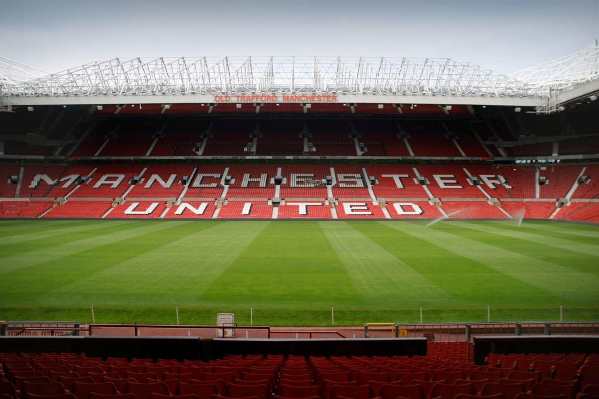

<div class="container">
    <div class="section">
        <h3 class="purple-text center-align">Manchester United</h3>
        <div class="divider"></div>
        <h6 class="center-align">Slogan: Glory Glory Manchester united</h6>
        <h6 class="center-align">Stadium : Old Traford</h6>
    </div>
    <div class="section">
        <h3 class="grey-text center-align">Trofi</h3>
        <div class="divider"></div>
        <h6 class="center-align">Liga Premier Inggris : 20 trofi</h6>
        <h6 class="center-align">Liga Divisi 1 Inggris : 2 trofi</h6>
        <h6 class="center-align">Piala FA : 12 trofi</h6>
        <h6 class="center-align">Piala EFL : 5 trofi</h6>
        <h6 class="center-align">FA Charity/Community Shield : 21 trofi</h6>
        <h6 class="center-align">Liga Champions UEFA : 3 trofi</h6>
        <h6 class="center-align">Piala Winners UEFA : 1 trofi</h6>
        <h6 class="center-align">Liga Eropa UEFA : 1 trofi</h6>
        <h6 class="center-align">Piala Super Eropa : 1 trofi</h6>
        <h6 class="center-align">Piala Interkontinental : 1 trofi</h6>
        <h6 class="center-align">Piala Dunia Antarklub FIFA : 1 trofi</h6>
    </div>
    <div class="section">
        <h3 class="grey-text center-align">Pengurus Klub</h3>
        <div class="divider"></div>
        <h6 class="center-align">Pemilik: Joel Glazer dan Avram Glazer</h6>
        <h6 class="center-align">Wakil Ketua Eksekutif: Ed Woodward</h6>
        <h6 class="center-align">Manajer: Ole Gunnar Solskjær</h6>
        <h6 class="center-align">Asisten Manajer: Michael Carrick</h6>  
    </div>
</div>

